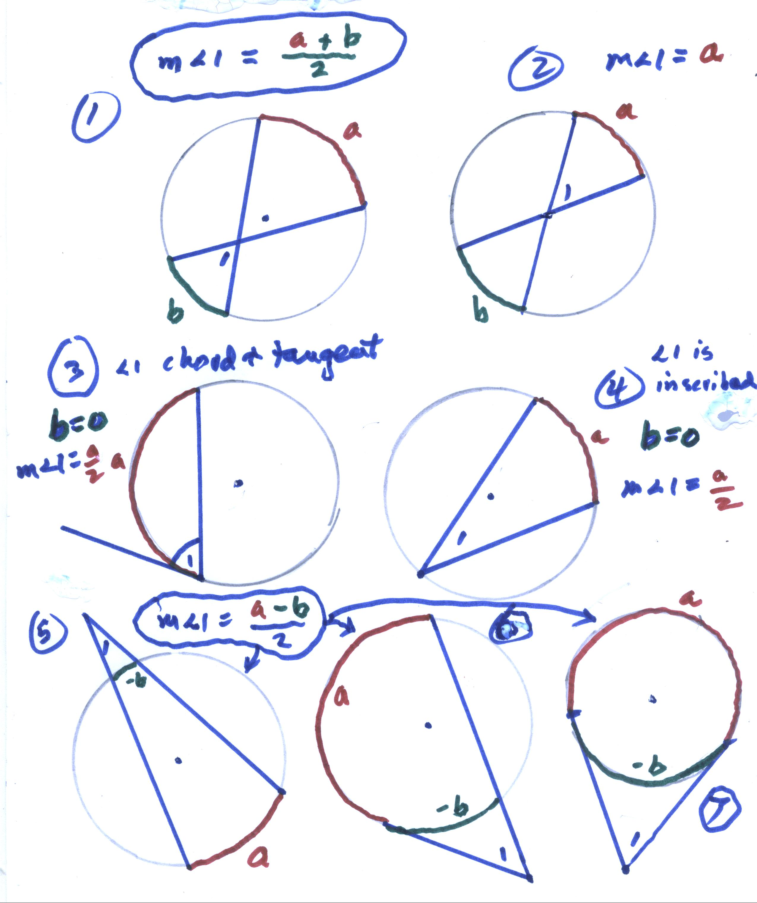

Angles in a circle
Don's students always have trouble with the angles in a circle. He tells them that all these cases invovle the arcs a and b, in the relationship of the measure of angle 1 = (a + b)/2.
Case#1 is the general case where the vertex of the angle is not at the center of the circle and the measure of angle 1 = (a + b)/2. .
Case #2: the vertex is at the center of the circle, in which case a = b, we get the measure of angle 1 = (a + a)/2 = a
Case #3: the vertex is on the circle, the angle has sides that are a tangent and a chord, and we have b=0, so the measure of angle 1 = a/2
Case #4: the vertex is on the circle, the angle is an inscribed angle, again with b=0, so the measure of angle 1 = a/2

Cases #5, #6, & #7, the vertex of angle 1 is outside the circle, and we can think of the curvature of arc b being opposite the curvature of arc a, or -b, so the measure of angle 1 = (a - b)/2 , in all 3 cases. Although not a proof, this is a much simpler way to remember these.